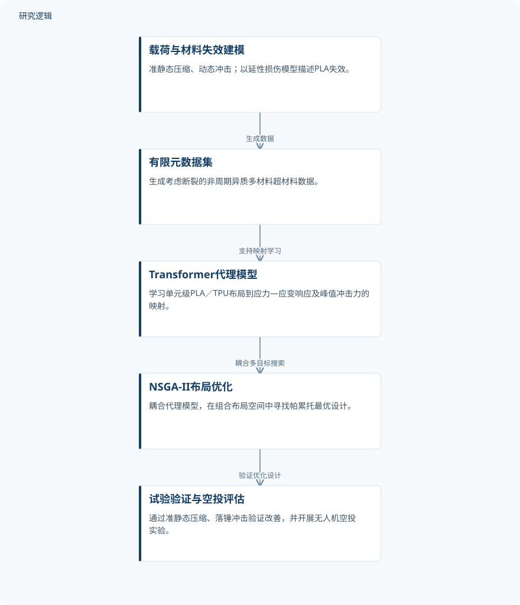

摘要解读
机器学习驱动的异质抗冲击超材料逆向设计
Machine learning-enabled inverse design of heterogeneous impact-resistant metamaterials
解读更新 2026-11-10 12:16 · 依据公开摘要整理，未核验全文细节
无人机空投缓冲结构如何吸收更多冲击能量，又不抬高冲击峰值力？这项研究将考虑材料失效的有限元数据、机器学习代理模型与多目标布局优化相结合，探索多材料超材料在吸能、减力和冲击后稳定性之间的平衡。
文章目录
吸能更多，还要控制冲击峰值
对于异质多材料超材料，材料放在哪里本身就是设计变量。离散材料布局形成高维、难以凭直觉判断的搜索空间；当目标是提高比吸能（SEA），同时避免增大峰值冲击力时，设计尤其困难。
摘要指出，另一项障碍是高保真数据不足：用于冲击响应优化的数据，需要同时体现动态载荷与材料失效。仅把关注点放在吸能指标上，也不足以概括空投缓冲所需的冲击后稳定性。
从失效感知数据到布局逆向设计
研究面向非周期异质多材料超材料，在准静态压缩与动态冲击条件下生成考虑断裂的有限元数据集，并采用延性损伤模型描述聚乳酸（PLA）的失效。
随后，基于Transformer的代理模型学习单元级PLA／热塑性聚氨酯（TPU）布局与应力—应变响应、峰值冲击力之间的映射，再与非支配排序遗传算法II（NSGA-II）耦合，在组合布局空间中寻找帕累托最优设计。
依据摘要整理的多材料布局逆向设计流程


仅概括摘要明确报告的数据生成、代理学习、优化与验证关系，不代表论文原图或完整实验配置。
下载 SVG图示关系说明
实线表示相邻阶段的信息流，虚线表示跨阶段联系或反馈。
载荷与材料失效建模 → 有限元数据集：生成数据；有限元数据集 → Transformer代理模型：支持映射学习；Transformer代理模型 → NSGA-II布局优化：耦合多目标搜索；NSGA-II布局优化 → 试验验证与空投评估：验证优化设计
布局优化兼顾吸能、减力与落地稳定
摘要报告，在可比设计之间，优化布局的SEA最高提高58%，峰值力降低47.4%；预测的改善通过准静态压缩和落锤冲击试验得到验证。这些数字不宜直接理解为所有优化设计均能同时达到的固定收益。
在无人机空投实验中，优化设计的载荷加速度峰值与纯TPU相当，同时避免了柔顺单材料箱体出现的明显回弹和倾覆。该结果说明，评价缓冲结构不能只看峰值，还应关注冲击后的运动与稳定状态。
摘要尚不足以界定性能提升的适用范围
本解读仅依据完整摘要。摘要未交代数据集规模、训练与测试划分、试件数量、重复试验和误差范围，因此无法据此判断代理模型精度、结果离散程度及统计稳健性；这些信息未报告于摘要，不等于论文没有开展相关工作。
摘要也未具体说明上述性能提升各自对应的比较基准、是否来自同一布局，以及载荷条件和材料参数范围。空投结果支持所报告场景下的表现，但不足以直接推及其他载荷、尺度或使用环境。
阅读启发：关注失效建模与多目标权衡
阅读启发：这项工作将机器学习代理模型与布局优化耦合，并让优化所依据的数据体现材料失效。进一步阅读时，值得关注失效模型如何标定，以及准静态与动态响应如何共同进入代理模型。
建议沿着帕累托设计与实验验证之间的对应关系阅读：吸能和峰值力如何权衡，所选布局为何能兼顾冲击后稳定性？这些问题有助于理解优化结果的工程意义，但当前摘要尚不足以给出完整机制解释。
以上为本站阅读启发与建议，不是论文已验证的结论。